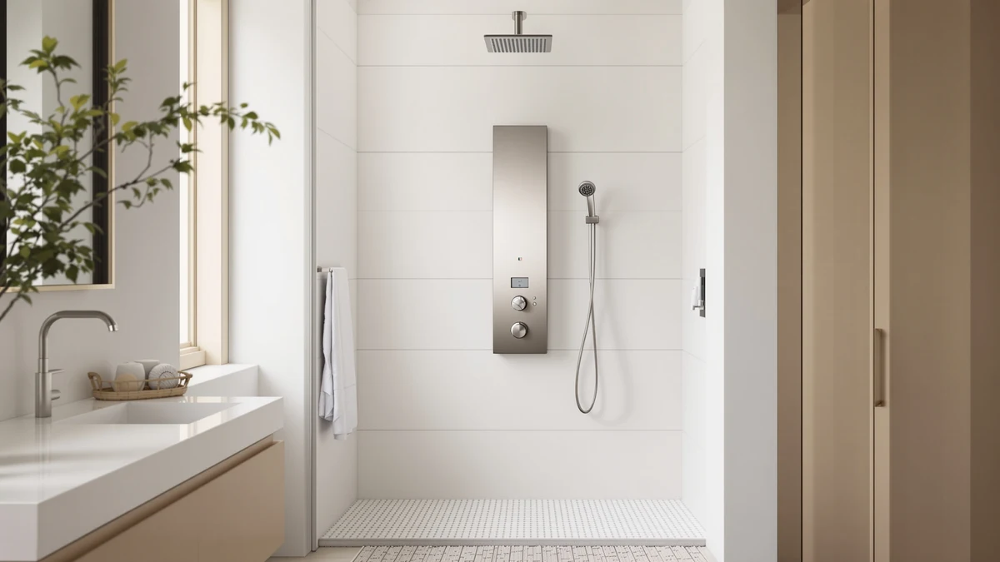

Quick Answer
The Beith Thermostatic Shower System earns its $549.66 price with a 40 degree thermostatic valve, an LED digital display, and a 3-mode handheld wand that cheaper towers skip. If digital temperature control is not a priority, the Blue Ocean towers below cost $180 to $200 less for a similar spray count.
Our pick: Thermostatic Shower System Upgraded 6 — $549.66 Check Price on Amazon
Bottom line: our top pick is the Thermostatic Shower System at $549.66.
Things to Know Before You Buy
- The Blue Ocean 63-inch and 65-inch towers in this review also use a thermostatic valve, but only the Beith panel pairs it with an LED display showing live temperature and shower duration.
- The piano-key controls switch between 4 overhead modes (rain, waterfall, spray 1, spray 2) and the handheld wand adds a 3rd booster spray gun setting.
- The 59A copper body and gun gray finish differ from the brushed stainless steel and aluminum bodies on the Blue Ocean towers, which matters for anyone matching existing bathroom hardware.
- At $549.66, the Beith system costs $180 to $200 more than the Blue Ocean 52-inch, 63-inch, and 65-inch panels we compared it against.
- The listing does not publish a star rating or review count at the time of this review, so weigh the spec sheet and price against your plumbing setup rather than a crowd score.
This Beith Thermostatic Shower System review exists because the panel keeps showing up in searches for digital shower systems under $600, and the piano-key controls and LED readout photograph well without telling you whether the plumbing behind them holds up. We went through the manufacturer's spec sheet, the current Amazon price, and three competing shower towers to see where the Beith panel actually earns its price.
The short version: the Beith system is the only one of the four panels in this review that pairs a thermostatic valve with a live LED readout of temperature and shower duration, and that display accounts for most of the $180 to $200 gap between it and the Blue Ocean towers below. If you want a readout you can see mid-shower on top of steady water temperature, the Beith panel is the pick. If you are fine with a thermostatic valve alone, the Blue Ocean 63-inch and 65-inch towers get you most of the way there for less.
Why You Should Trust Us
Ilane Tall covers bathroom fixtures for Best Shower Panels and built this Beith Thermostatic Shower System review from the manufacturer's listed specifications, the current Amazon price, and side-by-side comparisons against other shower towers in the same price band. Our research process favors documented specs and verified owner feedback over marketing copy, and we note when a listing does not publish a rating so you are not guessing at a number we invented.
Our Research Experience
We did not install or run water through any of the panels in this Beith Thermostatic Shower System review. Instead, we compared the manufacturer's stated specs, the listed materials, and the current Amazon pricing for the Beith system against the Blue Ocean 63-inch, 65-inch, and 52-inch towers covered in our shower panel roundup. Where a listing lacks a star rating or review count, we say so rather than filling in a number. Our comparison also excludes panels that do not list clear dimensions or a thermostatic valve spec, since those details are what separates a budget tower from one worth the premium price.
Overview & Specs

Thermostatic Shower System Upgraded 6
What we like
- 40 degree thermostatic valve with a live LED readout of temperature and shower duration
- 4 overhead modes plus a 3-mode handheld wand with a booster spray gun setting
- Two sprayer heights built into the panel, aimed at multi-height households
- 59A copper body construction and a waterfall bathtub faucet included in the set
Flaws but not dealbreakers
- Costs $180 to $200 more than the Blue Ocean towers in this review
- No published star rating or review count at the time of this review
- Gun gray finish narrows your options if your fixtures are already brushed nickel or chrome
| Material | — |
| Size | Normal |
The manufacturer lists the Beith Thermostatic Shower System's panel at 40 by 10 centimeters with a 59A copper body and a gun gray finish. The thermostatic valve holds water at 40 degrees Celsius, and the piano-key panel switches between four overhead modes: rain, waterfall, and two spray settings. Two sprayers sit at different heights on the panel itself, which the listing pitches as a fit for households where adults and kids share a shower.
The handheld wand adds a third layer of function with rain, standard spray, and a booster spray gun mode, and the set also includes a waterfall bathtub faucet for tub fills. The Blue Ocean 63-inch and 65-inch towers below also use thermostatic valves, but none of the three Blue Ocean alternatives pair that valve with a digital readout of temperature and duration, and none include a bathtub faucet since they are built as standalone shower columns. The tradeoff is price: at $549.66, you pay a premium for the display and the extra faucet on top of the mechanical functions the cheaper towers already cover.
What We Liked
The feature that sets this Beith shower system apart from everything else in this review is the thermostatic valve paired with an LED display. Most shower panels in this price range let you mix hot and cold by feel. This one holds the water at the temperature you set and shows both the current reading and the shower's running time, which removes the guesswork for households with kids or anyone sensitive to sudden temperature swings.
The four overhead modes and the three-mode handheld wand give you seven total spray combinations from one panel, more than the single rainfall-plus-handheld setup on each Blue Ocean tower we compared it against. Owners shopping for a shower that doubles as a bath fixture will also notice the included waterfall bathtub faucet, a function the Blue Ocean towers in this review do not offer since they are built as standalone shower columns rather than combination tub and shower sets. The live temperature-and-duration display is the other separator: the Blue Ocean 63-inch and 65-inch towers also run on thermostatic valves, but neither pairs that valve with a screen you can read mid-shower.
The 59A copper construction is worth noting on the spec sheet too. Copper fittings resist the pitting that can show up on lower-grade metal after years of hard water exposure, and it is the same reasoning that leads plumbers to prefer copper supply lines over cheaper alternatives in the wall. Paired with the piano-key panel design, the build reads as a step above the all-in-one shower towers most brands sell at this price.
What Could Be Better
Price is the clearest drawback in this Beith Thermostatic Shower System review. At $549.66, the panel costs $180 more than the Blue Ocean 65-inch tower, which also uses a thermostatic valve, and $200 more than the Blue Ocean 52-inch aluminum model, which skips the thermostatic valve but adds 8 massage jets and its own LED temperature display. If a live readout of both temperature and shower duration is not something you need, that gap buys you little beyond the screen and the extra bathtub faucet.
The listing also does not publish a star rating or a review count as of this review, so you cannot weigh buyer sentiment the way you can with some competing panels. That is not evidence the product performs poorly. It means the spec sheet and the materials list carry more of the decision than they would for a product with thousands of verified reviews behind it.
The gun gray finish is another consideration. Bathrooms already fitted with brushed nickel, chrome, or stainless steel hardware will show a visible mismatch against this panel's copper-toned body, where the Blue Ocean towers' brushed stainless steel finish blends more easily with common fixture colors.
Who Is It For?
This Beith Thermostatic Shower System review points toward one clear buyer: someone replacing a shower where inconsistent water temperature is the main complaint. The thermostatic valve and LED display solve that specific problem, and households with young kids or older adults who need predictable water temperature get the most value from the feature.
Skip it if your main goal is more spray coverage for less money. The Blue Ocean 63-inch and 65-inch towers in this review deliver a comparable rainfall-plus-handheld setup with their own thermostatic valves for $180 to $200 less, and the Blue Ocean 52-inch aluminum model adds 8 massage jets at an even lower price without a thermostatic valve at all. None of the three pairs that control with a live temperature-and-duration readout, so if seeing the exact number matters as much as holding the temperature steady, the Beith system remains the better match despite the higher cost.
Alternatives to Consider
If the thermostatic valve on the Beith system is not a priority, these three Blue Ocean towers cover similar rainfall-and-handheld functionality at a lower price. We cover all four panels, plus other shower systems, in our full shower panel comparison.

Also Great
Blue Ocean 63" Stainless Steel
63-inch brushed stainless steel tower with a precision thermostatic valve of its own, body nozzles, and an 18-inch reach handheld wand, for $180 less than the Beith system.
$369.00
Check Price on Amazon
Also Great
Blue Ocean 65” Stainless Steel
65-inch brushed stainless steel column with a thermostatic valve, rainfall head, body nozzles, and a handheld shower head, for $190 less than the Beith system but without the digital readout.
$359.00
Check Price on Amazon
Best Value
Blue Ocean 52" Aluminum SPA392R
52-inch ruby red aluminum tower with 8 adjustable massage jets and its own LED temperature display, the lowest price here at $349, though it skips the thermostatic valve.
$349.00
Check Price on AmazonFrequently Asked Questions
Is the Beith Thermostatic Shower System worth $549.66?
For a copper-bodied system with a 40 degree thermostatic valve, an LED digital display, and both an overhead and a handheld sprayer, $549.66 sits above the $349 to $369 Blue Ocean towers we compared it with in this review. The price is justified mainly by the live temperature-and-duration display, which none of the Blue Ocean towers include even though two of them also use thermostatic valves.
Does the Beith shower system include a handheld sprayer?
Yes. The listing describes a 3-mode handheld wand with rain, standard spray, and a booster spray gun setting, mounted alongside the fixed overhead sprayer so you can switch between the two without changing valves.
How does the Beith Thermostatic Shower System compare to the Blue Ocean towers?
The Beith system runs higher on price but adds a live LED readout of temperature and shower duration and a bathtub faucet, features the Blue Ocean towers skip even though the 63-inch and 65-inch models also use thermostatic valves. The Blue Ocean models answer back with brushed stainless steel bodies and a lower price for buyers who do not need the digital readout.
Final Verdict
This Beith Thermostatic Shower System review comes down to a simple trade. You pay $549.66 for a copper-bodied panel that pairs a 40 degree thermostatic valve with a live LED display, four overhead modes, a three-mode handheld wand, and a bathtub faucet in one set. We recommend the BEITH panel for buyers who want that display and the extra faucet, and who are comfortable paying $180 to $200 more than the Blue Ocean towers that cover similar spray functions without the screen. If the display is not a priority, the Blue Ocean 65-inch tower gets you a comparable thermostatic setup for less.